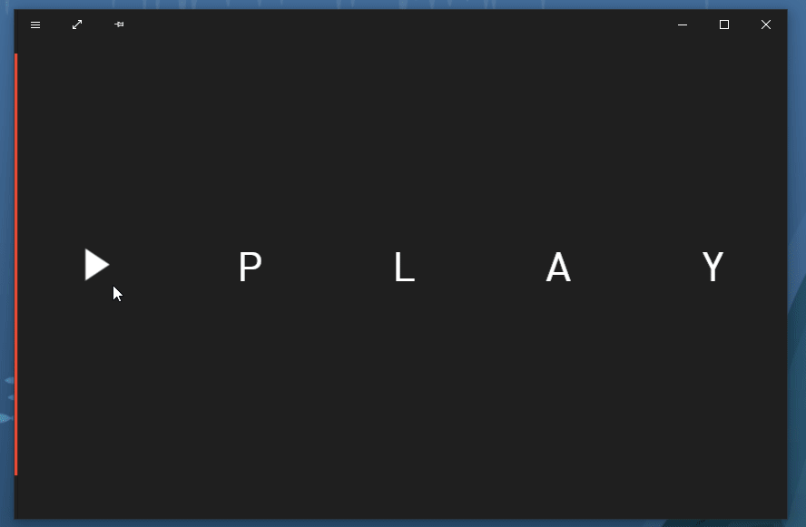

之前在 这篇文章 里，我介绍了如何使用UIElement.Clip裁剪UIElement的内容，使用代码如下：
<Canvas>
<Image Source="Images/Water_lilies.jpg" Width="200" Height="150">
<Image.Clip>
<RectangleGeometry Rect="100 75 50 50"/>
</Image.Clip>
</Image>
</Canvas>在 另一篇文章里 我介绍了如何使用 CanvasActiveLayer 裁剪Win2D内容，使用代码如下：
var fullSizeGeometry = CanvasGeometry.CreateRectangle(session, 0, 0, width, height);
var textGeometry = CanvasGeometry.CreateText(textLayout);
var finalGeometry = fullSizeGeometry.CombineWith(textGeometry, Matrix3x2.Identity, CanvasGeometryCombine.Exclude);
using (var layer = session.CreateLayer(1, finalGeometry))
{
//DrawSth
}这两种方式都有他们的局限：CanvasActiveLayer虽然很灵活，但只能裁剪Win2D的内容，而且代码量不少；而UIElement.Clip虽然使用简单，但只能裁剪矩形区域。而介于他们之间的是使用Visual.Clip的裁剪方案。
Visual.Clip允许用户使用CompositionClip。刚开始继承CompositionClip类的只有 InsetClip，它只能裁剪矩形区域，不能否定某些情况下它还是挺有用的，何况还能进行动画，但比UIElement.Clip还是好不了多少。使用方法如下：
var compositor = Window.Current.Compositor;
var visual = ElementCompositionPreview.GetElementVisual(uElement);
var clip = compositor.CreateInsetClip(leftInset, topInset, rightInset, bottomInset);
visual.Clip = clip;到了1809，Compositor提供了一个新的函数CreateGeometricClip，它可以以CompositionGeometry 为参数创建一个CompositionGeometricClip，这样就可以根据CompositionGeometry裁剪复杂的区域。Compositor提供了CreateEllipseGeometry、CreateLineGeometry、CreatePathGeometry、CreatePathGeometry(CompositionPath)、CreateRectangleGeometry、CreateRoundedRectangleGeometry等一些列创建Geometry的函数，具体使用方法如下：
var compositor = Window.Current.Compositor;
var visual = ElementCompositionPreview.GetElementVisual(uElement);
var geometry = compositor.CreateEllipseGeometry();
geometry.Center = new System.Numerics.Vector2(192, 525);
geometry.Radius = Vector2.Zero;
var clip = compositor.CreateGeometricClip(geometry);
visual.Clip = clip;上面的代码使用CreateEllipseGeometry创建了一个圆形的Geometry，设置好这个Geometry的中心点和半径，然后用这个圆形裁剪Visual。
CompositionApi的一个最大的好处是灵活的动画，例如下面这个用EllipseGeometry制作的动画：

它只是很简单地对Radius进行KeyFrame动画，代码如下：
var compositor = Window.Current.Compositor;
var animation = compositor.CreateVector2KeyFrameAnimation();
animation.DelayTime = delayTime;
animation.Duration = TimeSpan.FromSeconds(0.7);
animation.InsertKeyFrame(1, new Vector2(600, 600));
ellipseGeometry.StartAnimation(nameof(CompositionEllipseGeometry.Radius), animation);有趣的是Radius居然是个Vector2属性，所以CompositionEllipseGeometry其实可以创建为椭圆形。
有了CompositionGeometricClip可以在UWP裁剪复杂区域，但只能在1809以后使用。只是裁剪的话，目前看起来没比WPF有多少优势，但加上Composition动画可玩性就强太多了。使用WPF的时候我几乎不敢使用动画，总是需要照顾低端配置，又担心WPF的性能。10年过去了，UWP的性能以及现代化的电脑配置终于可以让我放飞自我了。
Compositor Class (Windows.UI.Composition) - Windows UWP applications _ Microsoft Docs
Visual.Clip Property (Windows.UI.Composition) - Windows UWP applications _ Microsoft Docs
CompositionClip Class (Windows.UI.Composition) - Windows UWP applications _ Microsoft Docs
InsetClip Class (Windows.UI.Composition) - Windows UWP applications _ Microsoft Docs
CompositionGeometry Class (Windows.UI.Composition) - Windows UWP applications _ Microsoft Docs
CompositionGeometricClip Class (Windows.UI.Composition) - Windows UWP applications _ Microsoft Docs